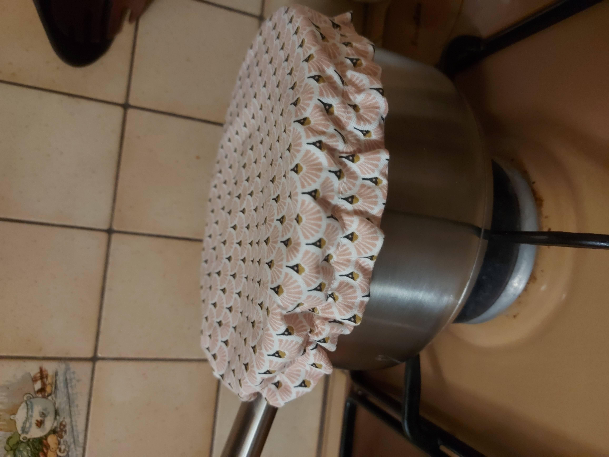

Envie de diminuer votre utilisation de film plastique ? Ce tuto est fait pour vous!
Matériel nécessaire :


Etape 1:
Réalisez le patron de votre couvercle. Pour cela, tracez un cercle du diamètre de votre plat +8cm. Ici, 28 cm, soit un cercle de rayon 14cm.

Etape 2:
Découpez dans le tissu principal et dans celui de la doublure, deux cercles à partir de votre patron.
Etape 3:
Positionnez vos deux cercles endroit contre endroit. Faites une couture, au point droit, tout le tour en laissant une ouverture d'environ 7 cm. Retournez votre tissu par l'ouverture.
Etape 4:
Une fois retourné, faites une couture à environ 1.5 cm du bord pour laisser passer l'élastique, en laissant toujours une ouverture de 7cm. Nous avons créer une fente.
Etape 5:
Une fois la fente créée, faites-y passer l'élastique à l'aide d'une épingle à nourrice.

Etape 6:
Faites un noeud avec les extremités de l'élastique pour le fermer. Puis fermez les ouvertures au point droit.
Etape 7:
Et ... c'est fini !!!

Donnez-nous votre avis
Partagez vos créations !
Bientôt vous pourrez nous envoyer vos photos ...